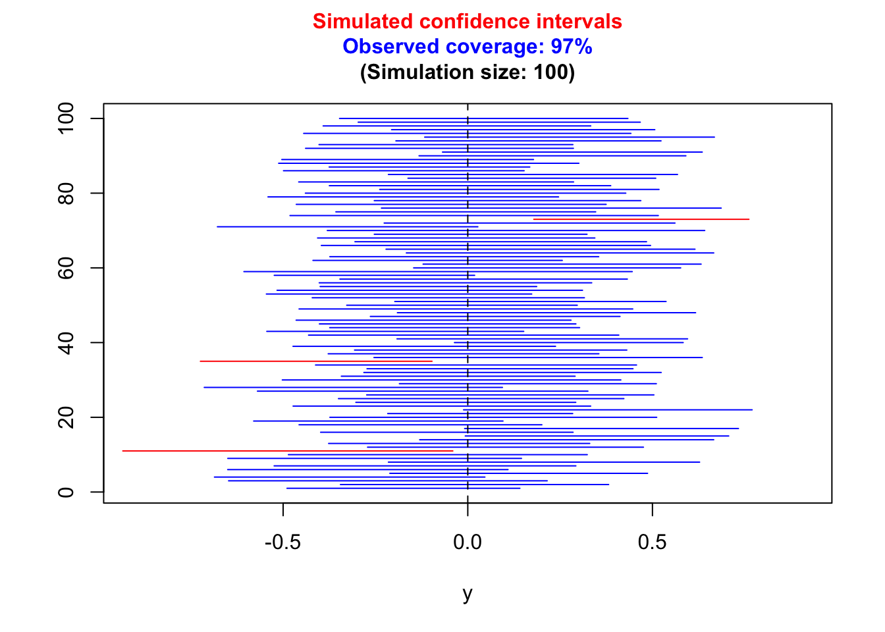

1.3 Quantifying uncertainty: confidence intervals
This statement describes how the sample means \(\bar x\) varies around the true mean \(\mu\). In practice all we see from our observed sample of data is a single \(\bar x\) and its estimated standard error. However, we can turn the statement around and expect that the true value of \(\mu\) will lie somewhere within 2 standard errors of \(\bar x\). The interval \[ ( \bar{x} - 2 \mbox{se}(\bar x), \bar{x} + 2 \mbox{se}(\bar x) ) \] is therefore a range of plausible values for the true mean \(\mu\). This is called a confidence interval because we can attach some useful proporties of this kind of interval; these are discussed below. We can also carry out some more careful probability calculations which show that, while the multiplier 2 is a good approximation, a more precise value is the percentile of a \(t\)-distribution with \((n-1)\) degrees of freedom.
The meaning of a confidence interval sometimes causes a bit of confusion. The interpretation as a range of plausible values for the quantity we are estimating is a helpful but informal one. To explore the formal properties a little further we can experiment with the rp.ci function in the rpanel package for R. An example is shown below. Here we randomly sample 30 observations from a distribution with mean 0 and standard deviation 1 and compute a confidence interval for the mean. However, we do this 100 times. Each interval will be different because it is based on a different random sample of data. The confidence of the intervals is conventionally set at 95% and this is done by choosing percentiles in the confidence interval formula which capture 95% of the \(t\)-distribution. Then, on average over repeated random samples, the computed confidence intervals will capture the true value 95% of the time. Any particular set of 100 intervals will not have exactly 95 which capture the true value but if we keep repeating this and accumulate the tally, the proportion of intervals which capture the true value will settle down to 95%.
